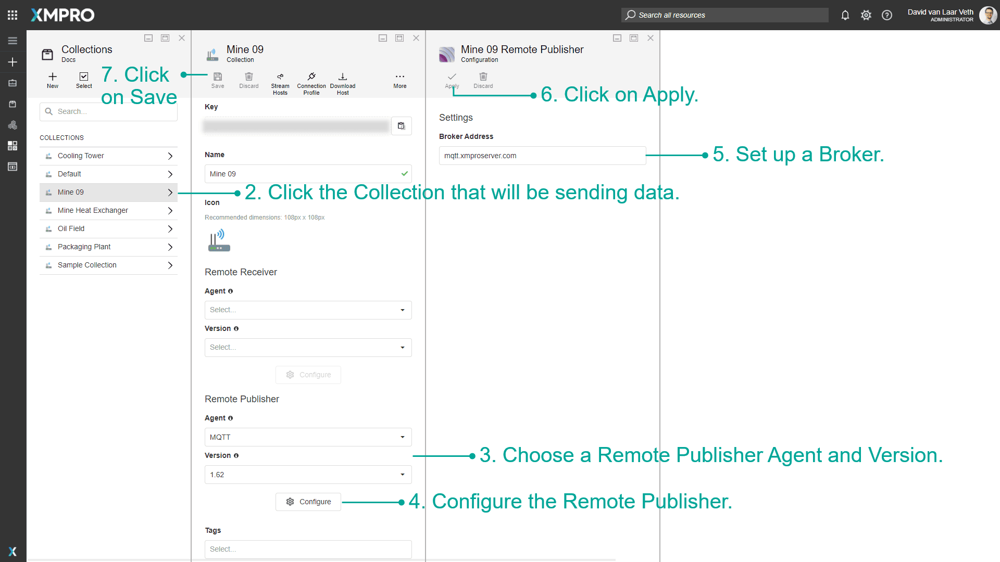
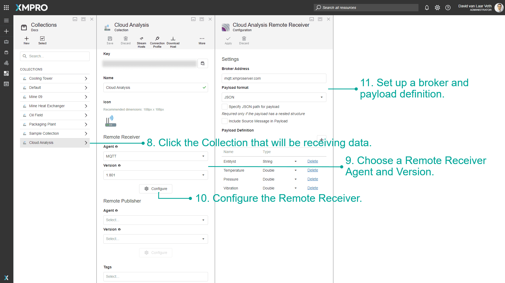
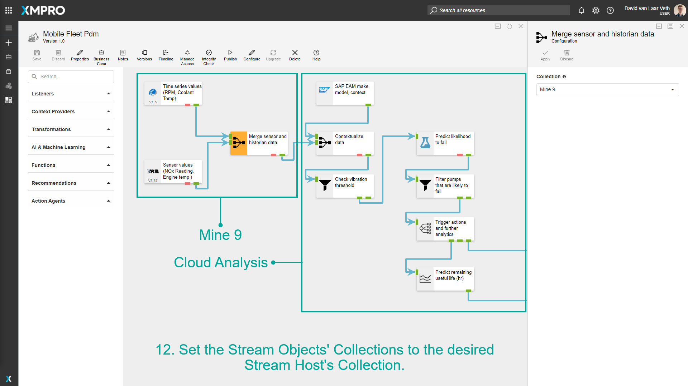

Use Remote Receivers and Publishers
Sometimes it is necessary to run the same Data Stream on two or more different systems. It may be that one system is low-powered and does not have enough resources to handle the integrations or analytical tasks of the Data Stream, or some integrations may not even be accessible on a system that is outside a corporate network or behind a firewall.
The solution to these problems is found by using Remote Receivers and Publishers. Two Collections are set up, and half of the Data Stream is run on one Collection while the other half runs on the other Collection. The Stream Host can automatically detect where data has to flow from one Collection to the other (a Collection Hop).
Note
It is recommended that you read the article listed below to improve your understanding of Live Data.
Each Collection allows you to configure a Remote Publisher and a Remote Receiver. Every time a Collection Hop is detected the Stream Hosts will automatically set up the configured Remote Publisher, which will put the data on a central store. The receiving Collection will also automatically set up a Remote Receiver which will receive data from the store and pass it on to the Data Stream on the other side.
It is also possible to set up multiple Stream Hosts to funnel data from tens or hundreds of devices into the data store, which will then be redirected to a single Stream Host with a Remote Receiver.
Set Up Remote Receivers and Publishers
To set up a Remote Receiver and a Remote Publisher, follow the steps below:
- Create two collections, one for each system.
- Click the Collection that will be sending data.
- Choose a Remote Publisher Agent and Version.
- Configure the Remote Publisher. Each Agent has specific configuration settings.
- For the MQTT Agent as a Remote Publisher, set up a broker.
- Click on Apply.
- Save the Collection.
- Click the Collection that will be receiving data.
- Choose a Remote Receiver Agent and Version.
- Configure the Remote Receiver. Each Agent has specific configuration settings.
- For the MQTT Agent as a Remote Publisher, Set up a broker and payload definition.
- In your Data Stream, set the Stream Objects' Collections to the desired Stream Host's Collection.



Last modified: November 27, 2025